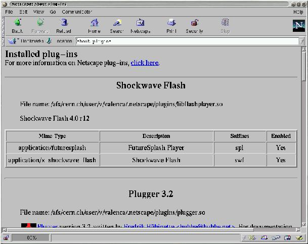

Developing with plugins and components
Paula Valença
Paula.Valenca@cern.ch
Copyright © 2000 by Paula Valenca
Nowadays, several projects have become so complex and large that are now impossible to develop and maintain as a single monolithic block. On the other hand, the ability for an application to acquire as much functionality as possible, reusing software and without accumulating functionality not needed at that moment and, thus, not wasting resources, is also becoming an important problem.
These and other problems caused some new strategies to develop, in particular, the use of plugins and components which, using some old principles of modularity and implementation facilities like shared libraries and middleware (e.g., CORBA), permit to overcome these problems in a clean and standard way.
This tutorial aims to provide a clear and precise description of these paradigms. Special attention is also given on how these paradigms can be developed and implementation issues like shared libraries and CORBA. To illustrate, several examples are given. A short discussion on important common aspects and when these strategies should or not be used concludes the tutorial.
 | This document was written in SGML using Docbook v.3.1 and translated to HTML and LaTeX using Norman Walsh stylesheets v.1.44 |
Overview
This tutorial describes two recent technologies that have become very popular: Plugins and Components. It's purpose is to provide a precise definition of this two paradigms and a formalisation of their characteristics. Still, implementation issues are not forgot and technologies like shared libraries and middleware by means of CORBA are also focused as well as some very short and simple examples.
The tutorial starts (Introduction) by presenting several common problems that caused these paradigms to evolve. From these problems a general list of what is desired to be fulfilled is created.
Before describing plugins and components and see how these two can handle the problems referred, Shared libraries provides a description on shared libraries: what they are, benefits and disadvantages, as well as presenting some very useful tools. Shared libraries are very important in developing, mainly, plugins but can also be a better choice for some problem than requiring all the functionality necessary to plugins whose disadvantages can overwrite the advantages.
Next comes the first paradigm focused: plugins (Plugins). A short and precise definition is first presented. The pros and cons of this paradigm are examined and by joining these to the experience gathered from plugin-based technologies available, a list of characteristics that should be fulfilled is presented. The chapter ends by comparing several publicly available implementations (Netscape, Gnumeric and GIMP) and pointing how some characteristics are or not fulfilled and, finally, a small example.
The second paradigm, components, follows in Components. The structure is very similar: a short and formal definition followed by a discussion on the concept, advantages, disadvantages and raised questions. From this, the definition is complemented with a list of characteristics that should be fulfilled. A short comparison on components and objects is summarised in a table since there are some similarities in the two concepts. Next, implementation issues are again approached by discussing middleware which constitutes one of the keywords in component-based technology and making a short description of CORBA. The chapter ends presenting an example: BONOBO, a component-based technology used in GNOME.
Finally, in What to choose it is possible to compare the technologies focused in this tutorial that, although quite different, have some similarities. Some important, general aspects are mentioned as well as some cautions that should be kept in mind.
Introduction
One of the biggest problems developers have to handle nowadays is on how to cope with the enormous size and complexity of an increasing number of current projects. These projects involve several people, possibly, in different teams and locations, developing an heterogeneous software where the different parts have to interact consistently, thus requiring a perfect agreement between teams. The problem gets worst when considering that the product will have to be maintained afterwards or even extended.
It is common knowledge that from a certain point it is impossible to have the application as a monolithic block. It is necessary to divide the project in different parts, as independent as possible, so that joining the work of two teams is as easy and consistent as possible. Dividing the project is also necessary to limit the scope of the problem being handled, enabling easier and clearer development and maintenance. For example, consider a product that captures, evaluates and stores some type of data. Now, consider that the way the data is stored is changed or there is a bug somewhere. Having clear distinctions between the different functionalities clearly makes this task easier and protects the rest of the product. But having a project divided in different parts brings the problem of architecting the parts, i.e., joining the different parts together. Teams are only familiar with their parts and communication between teams tends to be short. Also, it is very common to have the project spread in different platforms and locations.
On the other hand, it is also usually said that, if a certain functionality is needed and it is already available somewhere, one should reuse this implementation and not "reinvent the wheel". This should account also for using/developing products aside especially for a certain task instead of integrating that functionality in the main application. Besides the reusability of code, it also gives more flexibility (it is easier to add functionality this way than rebuilding the all application) and a simpler and clearer main application (instead of having a confusing, heterogeneous and heavy one). But this requires some conditions from both parts that should be considered before the development of either one. For instance, consider the last example. Imagine that in the evaluation stage, some graphics need to be generated. There are a big number of applications that draw graphics and are probably preferred than to add "from scratch" graphics functionality to the application. But the main problem is whether the graphic program is easily integrated which, most of the times, is not the case.
Continuing on the subject of adding/changing functionality and considering the same example, imagine that the data it handles is very heterogeneous and, thus, the way this data is evaluated, for example, is different according to the type of data. When the set of the types handled is small and doesn't change and the way they are handled is also static, the final product is a bit complex but handleable. But when this is not the case we come upon several problems:
Flexibility and consistency. How to add/change/remove functionality in a flexible manner without compromising the consistency of the application and, preferably, not having to rebuild all the application?
Efficiency. How to do this in a way that doesn't compromise to much the efficiency, e.g., there isn't a waste of resources since most will only be used for a certain period or not even used at all in a session?
Objectives
Recently, two paradigms have evolved that are especially aimed at this type of problems: Plugins[1] and Components. But, in order to understand why the need for this technology arose, we can compile, from the above problems, a list of objectives we would like to fulfil. It is easy to see, looking at the nature of the problems and the following list, why these new paradigms have become so popular.
- Modularity
Modularity is one of the keywords. How to divide an utility in different parts that obey the rules of modularity (independence, encapsulation) and interact with each other in a desired way. A special case would be to divide an utility in its main part (management) and its several branches, thus, separating functionality.
- Dynamic functionality independent of the main part
In other words, to be able to add/change/remove functionality of an utility without touching the main part. As an add-on, to be able to do that on runtime. This implies that the application shouldn't be rebuild and, further more, compiled, each time these changes take place.
- Independent development of parts
The development of each part of a project should be independent from the other ones. This obliges the communication between parts to be transparent and standard. Also, each part should be able to cope with the others being in different platforms and locations. Basically, each part shouldn't have to worry about how others are implemented and located.
- Communication between applications
This means being able to embed an application A that provides a desired functionality inside an application B thus reusing code and providing a lighter and simpler application B.
| These are, of course, very different objectives which rarely are assembled together. This is not intended to find a unique solution that covers all of them. |
Using plugins and components enables us to fulfil this objectives in a clever and transparent way (when used correctly). How this is done is the subject of the next chapters. But first it is necessary to have a look at shared libraries.
Shared libraries
Basic concepts
- Shared library
a block of code, loaded on request, providing data types and procedures
Basically, a library is a set of functions and/or structures to be used by applications. For example, if a programmer wishes to use more complex mathematical functions in C like sin he would have to use the library libm where this and other functions are defined. To do so, he can link the library in the compilation stage, using the -l option with the name of the library (without the lib prefix and the extension: in this case, -lm).
A shared library opposes to a static one in the sense that the library is only loaded at runtime and not in the compilation stage. So, while in static libraries the program carries the library code, when linked to a shared one the library code is not present and is only loaded into memory when needed.
One of the named advantages of shared libraries, and also another characteristic that differs them from static ones, is the fact that the system has, at most, one copy of the library's code per library. When loading, the system first checks if there is already a copy of the library on memory. The code is only copied if there is none, while as in static the code is included in every compiled program to which the library is linked.
So, if the program doesn't carry the library's code, when is it loaded? There are two alternatives:
automatically at the start of the process and, thus, only unloaded at the end: the library must be linked at compilation stage;
by request of the program itself (using, for example, dlopen()): the code can be loaded and unloaded in the middle of the process or not even loaded at all; furthermore, the library is not linked at compilation stage;
A small example at the end of this section will illustrate these concepts.
Advantages and disadvantages
But why use a shared library instead of a static one? And why use demand loading instead of automatic loading or the other way around? Shared libraries bring a number of advantages...
libraries are only loaded at run time (thus, the possibility to change the library without having to recompile the end application);
lighter applications and saving of space (since the application doesn't carry the library's code);
In particular, demand loading of a shared library can be very useful
as stated before it is the application itself which requests the loading: the code can be loaded and unloaded at any given stage or not loaded at all; this is particularly useful when the program may use resources from several libraries but not necessarily at that moment, thus, avoiding that dozens of libraries that are not being used would be wasting memory;
since the library is not linked at compilation stage the application doesn't have to know it beforehand: for example, all the libraries can be put in a certain directory where the application will fetch them; this enables that resources can be added or changed without touching the application itself;
But they have a cost. Also, some problems may arise and should be taken in account.
First, errors only show at runtime. This makes the debugging more difficult but also imposes some care on moving libraries and changing them;
Creating a shared library is more complex and requires a few number of flags and details. However, this can be easily overcome (see Libtool);
The dynamic loading obliges the code to be Platform Independent Code(PIC). This makes the library heavier so, although applications are lighter, space is only actually saved if there is more than one application linked or there is demand loading;
The resources that demand loading enables (see above) also bring dangerous situations:
What happens if the program doesn't find the library expected? The error can occur at anytime of the process life and not at the beginning as in automatic loading;
How does the program know which interface the library provides? If it is defined beforehand, how to ally versioning and heterogeneity of libraries with this prior knowledge without having to touch the application?
Developing a shared library
Developing a shared library, as is, is generally more difficult than developing a static one. The complexity increases in a great amount when trying to make it platform independent and easily built (a good user interface). There are, however, some very powerful utilities that not only simplify this procedure but are also greatly recommended since they produce a standard, compliant and robust final product. Their use is quite straightforward and apply to static ones as well.
Autoconf and Automake
These two utilities combined are especially adequate for projects intended to be easily developed, used and installed in different platforms, helping to provide:
platform independence and/or ability to check for the features needed by the package;
a custom and straightforward user interface when installing the package;
an easy maintenance of Makefile (thus, helping compilation)
To configure the software package, a configure script is generated from a file called configure.in created by the developer. This file should contain invocations to Autoconf macros that test the system features needed by the package. Autoscan can be used to help write this file.
Automake assumes that Autoconf is being used and is used to produce Makefile.in files from Makefile.am files created by the developer. When the configure script is run these files will originate Makefile's. These Makefile.am files consist mainly of a series of make macro definitions.
The final user will only have to type
$ ./configure $ make $ make install |
Autoconf and Automake manuals in the GNU documentation provide a very good explanation on how to use these tools ( see Links and further information)
Libtool
Libtool is a tool for developing libraries that provides the complete functionality of a host type in a generic interface but hiding the confusing and complex details. It can be used together with Autoconf and Automake.
Some points about libtool:
Libtool is based on the paradigm that " libraries are programs with multiple entry points, and more formally defined interfaces."; in fact, the rules to create a library look much like a compilation of a program;
By default, libtool tries to produce both a static and shared library; if the system doesn't permit shared libraries, it produces a static version;
When creating the library, wrappers are used (for extra meta-data, since the meta-data stored varies with the platforms) as well as temporary directories for storing the libraries.
Libtool provides several facilities:
Creating object files (including PIC)
Linking libraries
Linking executables
Debugging executables
Installing libraries
Installing executables
In A small example, it's illustrated the use of libtool to create a library.
GNU documentation has also a very good, step by step, manual of libtool (see Links and further information)
A small example
To illustrate, here is the development of a very small library, libgarfield.so, from the files eating.c and sleeping.c with the header file garfield.h. An executable called garfield is created by linking main.c to libgarfield.la (which is a wrapper to libgarfield.so).
Autoconf and automake are not used here, only libtool. It is presented the steps for the most common actions; see the libtool manual for the explanation of these steps and other possible actions that can be performed (see Links and further information).
Creating object files. Note that besides the normal object files it is also created .lo files which are PIC object files needed when creating the shared library.
$ gcc -g -O -c main.c $ libtool gcc -g -O -c eating.c mkdir .libs gcc -g -O -c eating.c -fPIC -DPIC -o .libs/eating.lo 5 gcc -g -O -c eating.c -o eating.o >/dev/null 2>&1 mv -f .libs/eating.lo eating.lo $ libtool gcc -g -O -c sleeping.c rm -f .libs/sleeping.lo gcc -g -O -c sleeping.c -fPIC -DPIC -o .libs/sleeping.lo 10 gcc -g -O -c sleeping.c -o sleeping.o >/dev/null 2>&1 mv -f .libs/sleeping.lo sleeping.lo |
Linking libraries. The libraries are put in the .libs/ directory and libgarfield.la is created in place which, as was said, is a wrapper for the shared library.
$ libtool gcc -g -O -o libgarfield.la eating.lo sleeping.lo \ -rpath /usr/local/lib rm -fr .libs/libgarfield.la .libs/libgarfield.* .libs/libgarfield.* gcc -shared eating.lo sleeping.lo -lc -Wl,-soname -Wl,libgarfield.so.0 -o .libs/libgarfield.so.0.0.0 5 (cd .libs && rm -f libgarfield.so.0 && ln -s libgarfield.so.0.0.0 libgarfield.so.0) (cd .libs && rm -f libgarfield.so && ln -s libgarfield.so.0.0.0 libgarfield.so) ar cru .libs/libgarfield.a eating.o sleeping.o ranlib .libs/libgarfield.a creating libgarfield.la 10 (cd .libs && rm -f libgarfield.la && ln -s ../libgarfield.la libgarfield.la) |
Linking the executable. The executable is put inside .libs/ and a wrapper script is created in place.
$ libtool gcc -g -O -o garfield main.o libgarfield.la gcc -g -O -o .libs/garfield main.o .libs/libgarfield.so -Wl,--rpath -Wl,/usr/local/lib creating garfield |
Installing libraries. libgarfield.la is also installed with the static and shared libraries. All the necessary operations are usually done (like, for example, calling ldconfig) but running libtool -n --finish libdir will give further hints on what to do (in this example, the installation command already gives this information).
$ libtool install -c libgarfield.la /usr/local/lib/libgarfield.la install -c .libs/libgarfield.so.0.0.0 /usr/local/lib/libgarfield.so.0.0.0 (cd /usr/local/lib && rm -f libgarfield.so.0 && ln -s libgarfield.so.0.0.0 libgarfield.so.0) (cd /usr/local/lib && rm -f libgarfield.so && ln -s libgarfield.so.0.0.0 libgarfield.so) 5 install -c .libs/libgarfield.lai /usr/local/lib/libgarfield.la install -c .libs/libgarfield.a /usr/local/lib/libgarfield.a ranlib /usr/local/lib/libgarfield.a chmod 644 /usr/local/lib/libgarfield.a PATH="$PATH:/sbin" ldconfig -n /usr/local/lib 10 ---------------------------------------------------------------------- Libraries have been installed in: /usr/local/lib If you ever happen to want to link against installed libraries 15 in a given directory, LIBDIR, you must either use libtool, and specify the full pathname of the library, or use `-LLIBDIR' flag during linking and do at least one of the following: - add LIBDIR to the `LD_LIBRARY_PATH' environment variable during execution 20 - add LIBDIR to the `LD_RUN_PATH' environment variable during linking - use the `-Wl,--rpath -Wl,LIBDIR' linker flag - have your system administrator add LIBDIR to `/etc/ld.so.conf' 25 See any operating system documentation about shared libraries for more information, such as the ld(1) and ld.so(8) manual pages. ---------------------------------------------------------------------- |
Other actions like debugging are also easily done and take advantage of the wrapper scripts.
Links and further information
Autoconf and it's manual can be found at http://www.gnu.org/software/autoconf/autoconf.html.
Automake and it's manual can be found at http://www.gnu.org/software/automake/automake.html.
Libtool's homepage is located at http://www.gnu.org/software/libtool/libtool.html.
The man pages of dlopen , ld, ldconfig also provide useful information.
General description and implementation information on shared libraries can be found in Building and Using Static and Shared "C" Libraries and Shared Libraries (Section 4).
In the GLib Reference Manual, there is a section describing the gmodule library, Dynamic Loading of Modules.
Plugins
There is sometimes some confusion between plugins and shared libraries and what can or cannot be called to be a "plugin". This section aims to clarify this concept by presenting a short and precise (hopefully) definition of a plugin as well as the characteristics that a "true" plugin should fulfill. Examples are also given.
Concept and examples
- Plugin
A unit of software whose purpose is to extend the functionality of an independent application at run-time. The application has no prior knowledge of the plugin; plugin must act as a "black-box" and present itself by means of a standard interface.
The following image tries to illustrate this concept: an independent application where units of software, intended to complement the functionality, can be "plugged" to.

An illustration of the use of plugins
Using plugins is becoming very popular, especially in programs that process heterogeneous data and would, otherwise be less flexible and heavier. Examples are:
The use of the Mime-type methodology in Netscape and other web browsers: this enables that special data like audio or video can be present on a web page and viewed accordingly;
Manipulation of images and scripting in GIMP (GNOME);
Translation from other formats (e.g.: Excel) and extension of the functionality in Gnumeric (GIMP), e.g., adding a statistic function not included;
Acrobat, Photoshop, AutoCad...
Pros and cons
Plugins are a good way of adding functionality to an independent application: they can be loaded and unloaded during runtime and there is no need to recompile the main application when adding a new plugin. This way we can have a main application lighter and focused on the "essentials" which also brings easier development: instead of an heavy, complex, mixed application we have a main application with the fundamental parts and a variety of plugins which extend the functionality.
Plugins are usually implemented as demand-loaded shared libraries since these libraries can be loaded on runtime (as opposed to static) which is necessary for the "plug" concept characteristic of plugins. Thus, they inherit their characteristics.
 | Note that plugins are not shared libraries. A plugin is a paradigm based on the idea of "plugging" functionality into an application, demand-loaded shared library is a way to implement this paradigm. |
But the demand loading raises some questions:
Should the application know beforehand the plugin? "Knowing the plugin" translates to knowing the name of the library as well as it's interface and what it does. If it does, then what to do if
there is a change in the name or version of the plugin?
there is a change in the functionality (extension or alteration of the interface)?
there is a wish to add, remove or substitute plugins?
On the other hand, if the application doesn't have this information
how should it acquire this information?
the knowledge on what to expect from the plugins is practically none
and so it is dangerous for the application to depend on a plugin
Nevertheless, it has to be defined an interface that a plugin must implement and must be common to all ( in order to use the plugin, the application has to call, at least, one function; the reason why this should be common to all is related with the last topic and, in particular, comes clear if we consider we want to be able to add new plugins without modifying the application). But the question now is: how to define an interface that is not to restrict nor to loose?
How much of the application could the plugin see and vice-versa? The view of the plugin by the application falls, in part, on the item above; in particular, if the application has no prior knowledge of the plugin, since some information must be given, using the plugin will be more difficult if this information is complex and big.
On the other hand, the plugin has also to have some knowledge on the application. Since the plugin is developed with a particular application in mind the only problem that arises in carrying this knowledge is if there are alterations on the application.
In What to choose further discussion is done mainly comparing the different strategies presented here. In the next section, baring these problems in mind, it's presented a list of requirements that are believed to be essential in a plugin-based technology.
On developing plugins
We can specify the following list of requirements as a list that should be met in order to have a "true" plugin system. This list was determined essentially from the various plugin-based technologies and personal experience and, of course, some may not agree with it.
The application must be independent from the plugins.
There should be a "black-box" view in both directions.
The application must not "know" the plugin beforehand; the plugin must introduce itself to the application.
The application must be loosely coupled with the plugins; a common interface to be provided by the plugins (whether total or partial) must be defined precisely.
The application should define what services are provided to the plugin via interface definitions.
A plugin must be self-contained.
A plugin should create a plugin instance to handle each task.
The first point has to do with the fact that the application must run by itself, in other words, it must couple with not having a plugin adequate for a particular task ( even if it means, for example, discarding the task).
Most of the points before have to do with what was discussed before. The "black-box" view and the well defined interfaces in both direction enable both parts to be implementation independent of the other. So, if there is a change in the version of one of the parts, the risk of affecting the other part is lesser (less need, if not none at all, to recompile the other part). Also this accounts for a clear and standard communication between parts.
As was noted, so that there is more flexibility in "plugging" the application shouldn't known the plugins in advance. This also accounts for the independence between both parts (as an example, imagine adding a new plugin or changing by another functionally similar).
But then how does the application acquire the needed information? First, by expecting that the plugin obeys a certain defined interface common to all the plugins of that application. This interface must provide a function that returns the description of the plugin, in particular, what type of task it handles. The other important aspect that the application needs to know is what function to call so that this particular task is done: this can be achieved by either passing this information at the same time that the information above is passed, or, by requiring this function on the interface common to all (something of the type do_work()).
So, although this interface varies between technologies (as can be seen in the examples below), the plugin should provide:
information on the type of task it can handle
a function to be called to handle that type of task (do_work())
an instance-type strategy including a structure to store all the data of a particular task and a way to know if there aren't any tasks (instances) still working so that the plugin can be unloaded
a function to initialize the plugin
Whether the application only accepts the common interface or whether the plugin can provide an extension to this interface (a total interface opposed to a partial one) it's the developers decision but must also be defined beforehand so that the application can couple with that. If it's a partial one, the extra should also be declared when the plugin presents itself.
The last point comes mainly from the fact that a plugin is loaded at runtime and the separation between it and the application; if the plugin has dependencies, it can be very difficult to check these dependencies in runtime. This point is desirable but not always achievable.
| Not quite a requirement but more of a principle: a plugin is application-dependent in the sense that it was developed with an application in mind. Even if it can be used outside it still has to obey an interface imposed by the application. |
Looking at some plugin-based technologies
We will know look at some of the examples referred at the beginning of the section and see how the plugin paradigm is implemented in them: Netscape, Gnumeric and GIMP.
Netscape (and Mozilla)

Netscape has a SDK for development of plugins which contains a template for a plugin: a user only has to "fill-in" the functions defined in the template. Furthermore, the API is very well defined in tables on the documentation: which functions Netscape provides, which functions the plugin must and can define and which structures are defined.
Both Netscape and the plugins act as complete "black-boxes": the communication is all done by the API defined in the documentation. These are the main aspects of this API:
A plugin life-cycle consist of four stages :
Initialize. When a plugin is first called, Netscape loads the plugin into memory, and calls a function(NPP_Initialize) defined by the plugin which the plugin uses to initialize itself;
New Instance. Every time a plugin is invoked, Netscape calls NPP_New (again defined by the plugin) which creates a new instance of a plugin. This includes the first time the plugin is called also (this means that if the same web page or two different windows call the same plugin, two instances are created);
Destroy Instance. When a certain instance of a plugin is no longer used, Netscape calls NPP_Destroy (plugin defined) to "destroy" that particular instance;
Shutdown. When all the instances of a plugin are destroyed, Netscape calls the plugin function NPP_Shutdown and then removes the plugin from the browser memory.
In practice, there is a structure type called NPP which contains two pointers: one to the plugin's private data (pdata) which Netscape doesn't touch and one to the browser private data (ndata) which, in turn, the plugin doesn't touch. A variable of type NPP is passed to the functions which handle data. The plugin defines a structure type PluginInstance and allocates the pdata to that type.
Information about the plugin is given by the plugin defined functions NPP_GetMIMEDescription and NPP_GetValue.
Work is done by communication through streams (usually, this only means Netscape passing the data to be analyzed to the plugin) and display through the window or not.
To summarize, the API the plugin must define is already declared in the template; it includes the 4 functions that compose the plugin life-cycle mentioned, the 2 functions for giving information about the plugin plus some functions for stream and window handling. There is also a function related to Java.
How Netscape loads plugins: Netscape looks for plugins in directories indicated by the NPX_PLUGIN_PATH environment variable when it starts up. Usually, this directories are /usr/lib/netscape/plugins/ and $HOME/.netscape/plugins/;
Gnumeric

The API defined by the plugin is very concise : it consists of a single function, init_plugin, which returns a structure of type PluginData containing
the plugin filename,
an handle to the plugin (see below),
the init_plugin function itself,
a can_unload function which states if the plugin can be removed, in particular, checking if there aren't any instances still working
a cleanup_plugin function called when the plugin is unloaded,
a title for the plugin,
and a pointer to the plugin's private data to be filled by it.
In this structure, the plugin only defines the can_unload and cleanup_function, the title and, when needed, the private_data; all others are filled by Gnumeric when loading the plugin. The API the plugin must define is partial: the plugin must "register" the functions it defines in the init_plugin() function.
When Gnumeric starts, it looks for plugins in the directories $HOME/.gnumeric/plugins/$VERSION/ and /usr/lib/gnumeric/plugins/$VERSION/; Then, for each plugin, creates a structure of type PluginData, stores the name, opens the module (plugin) and stores the handle resulting, calls init_plugin and appends the PluginData data to the plugin_list. Gnumeric also provides what is called a "plugin manager" which can be used in runtime to load and unload plugins.
An important point is that there is not a specific and restricted API from Gnumeric to the plugin; the developer simply uses the functions and types defined by Gnumeric and Gnome in the headers files. So, Gnumeric doesn't act so much like a "black-box" and doesn't offer a well defined API which doesn't comply with the requirements mentioned above.
GIMP
Gimp defines two types of plugins : the general ones and the extensions. The only difference is a functional one : the first usually receive an image and do some transformation to the image; the second extend functionality by, for example, permitting to write scripts in Perl, Python, etc. that generate an image instead of doing it directly, by hand, in Gimp.
The API the plugin must define consists only of a variable called PLUG_IN_INFO of type GPlugInInfo containing pointers to four functions:
the first two, of type init_proc and quit_proc, usually are not used by a plugin and, so, usually are set to NULL,
the third of type query_proc (usually named query()) is called by Gimp at load time (see below),
the fourth of type run_proc (usually named run()) is called when the procedure is to be run.
At start-up, Gimp looks for plugins in the plug_in_path (similar to the others) and looks for further information in the file pluginrc and, for each plugin, calls query(). The query() function must register the plugin in the procedure database.
Gimp provides access to much of its internals through a database of procedures where each plugin must insert itself into. This enables a plugin to call GIMP internal procedures or other plugins. For example, another plugin may use gimp_run_procedure() to run the randomize plugin. Again this facility can be dangerous so the plugin should check that the desired procedure is in the database before calling it.
To end, an example: the randomize plugin. When the user selects randomize from the menu, Gimp calls the run() function passing the required parameters registered by the gimp_install_procedure() among whose is the "image"; run() launches a dialog box inquiring what type of randomization and the amount of "noise" the user wants, does the required transformation on the image and refreshes the display of the image.
Some notes
The way plugins are "plugged" to the application is very simple: when the application starts it looks for plugins (sometimes just checking if the termination is .so) in certain defined directories. Additionally, the user can, in some cases, change the PATH variable containing the directories to search or load and unload plugins in run-time.
Thw gmodule library is commonly used;
Most of the requirements described above are common to all this technologies although the implementation is different (e.g., a common interface, a mean of providing information about the plugin,...)
Netscape has a very rigid, totally defined API, Gnumeric has a small and partial for the plugin and a very loose one for the application. GIMP, is also very loose but gives a bit more of robustness. Although the purposes and contexts are different, the strategy Netscape uses is the most robust of the three.
Example: a Gnumeric plugin
Although Gnumeric has some flaws it provides most of the core ideas of this paradigm.
The following plugin adds the famous factorial function (MyFactorial()) to Gnumeric. Here is the source code (plugin-myfact.c ).
#include <gnome.h>
#include <glib.h>
#include "gnumeric.h"
5 #include "func.h"
#include "plugin.h"
static Value *
func_fact (FunctionEvalInfo *ei, Value *argv [])
10 {
int num = value_get_as_int (argv[0]);
int res = 1;
while(num > 1) {
15 res *= num;
num--;
}
return value_new_int (res);
}
20
static int
can_unload (PluginData *pd)
{
Symbol *sym;
25
sym = symbol_lookup (global_symbol_table, "MyFactorial");
return sym->ref_count <= 1;
}
30 static void
cleanup_plugin (PluginData *pd)
{
Symbol *sym;
35 g_free (pd->title);
sym = symbol_lookup (global_symbol_table, "MyFactorial");
if (sym)
symbol_unref (sym);
}
40
PluginInitResult
init_plugin (CommandContext *context, PluginData *pd)
{
FunctionCategory *cat;
45
/* The next line checks if the Gnumeric version being used corresponds
to the required by the plugin */
if (plugin_version_mismatch (context, pd, GNUMERIC_VERSION))
return PLUGIN_QUIET_ERROR;
50
cat = function_get_category (_("Fact PlugIn"));
function_add_args (cat, "MyFactorial", "f", "number", NULL, func_fact);
pd->can_unload = can_unload;
55 pd->cleanup_plugin = cleanup_plugin;
pd->title = g_strdup ("My PlugIn Plugin");
return PLUGIN_OK;
} |
The main function here is the init_plugin() function. Line 51 establishes the category of the plugin; line 52 adds the function func_fact() to Gnumeric with the name MyFactorial and requiring one argument. Next lines fill the remain positions of the PluginData variable.
Links and further information
Netscape has a web page on plugins: http://home.netscape.com/plugins/
Gnumeric can be found at http://www.gnome.org/projects/gnumeric/.
Gimp can be found at http://www.gimp.org.
No clear documentation of plugins was found. However Mozilla, Gnumeric and Gimp provide the source code so I recomend looking at the files where the loading and management of plugins are handled. Many of these applications provide sample/test plugins with the source code. It is also interesting to look at these samples for their structure[2].
Components
This section focus on the Component-based paradigm. It presents a precise definition which is complemented after by a list of characteristics that a component should fulfill. Since middleware plays an important role in components, a short overview of CORBA is also done. Finally, Bonobo is used as an example.
Concept and examples
There isn't much consensus in what constitutes a component. A good yet still incomplete definition is Clemens Szyperski's list of characteristic properties of a component:
- Component
A component is an indivisible unit of independent deployment.
A component is a unit of third-party composition.
A component has no persistent state.

An illustration of the use of components
This definition may seem too general but basically constitutes the core on what consists a component and has several implications. This list will be complemented in the next section.
Some examples
Imagine a big, complex and heterogeneous project divided in different parts, each with its particular function and interacting with other parts of the project, being developed by different teams. The final product may even be located in different platforms and locations. This is a good example in how component-based technology can be used. Basically, each part constitutes a component. An interface contract for each component is established and interaction is done through these interfaces. Each part shouldn't have to worry about the other parts, in particular, their location and platform.
Another example can be found in desktop environments. Imagine a user writing a document or a web page where he wants to integrate a graphic. Putting graphics functionality in the word processor or web page editor would be overloading them (how about audio, movie, barcharts...?). Doing it outside and importing as an image is also not the best solution. But if there is already a mechanism for handling that functionality why not reuse it? Basically, the idea is to "embed" the graphics mechanism in the word processor or web page editor (something like: "when handling this data use this particular mechanism"). But to have a good interaction between mechanisms we need independence, interface contracts and again components appear as a good solution for this.
Discussing and complementing the definition
Key aspects and raised questions
First, let's refer to the aimed key aspects in component-based development.
Standardized parts and services (both through the standardization of components and the environment in which they operate.)
Minimal or no contact between entities designing components; decoupling of development efforts.
Access to practical (re)use both internal and external through standardized interoperability, configurability, and deployment.
Independent variability through documentation of components 'seams' (the interfaces used and exposed).
Source code for custom needs; binary components for standard needs.
A strict emphasis on component assembly first; manual coding second.
A robust mechanism for the delivery of architectures, frameworks, and services.
But this implies several questions:
How "loose" do we want a component to be? Could it be dependent from other components or context-based? At first glance this doesn't seem desirable since it will minimize reuse which is one of the main aspects desired.
But then how do we minimize problems occurring from deployment and reuse? These problems involve dependencies both from the environment and other components.
How to minimize communication between parts and dependencies on the developments of the several parts?
How to handle third-party interoperability? In order to avoid problems with versioning it is necessary a "black-box" view of the component but that is not enough. The third-party still has to have a guarantee on the services provided by the component.
How to handle heterogeneity between parts (for example, different languages, different platforms,...)?
What happens if the component has persistent state? Having persistent state would make two copies of a component different: is that desirable?
Looking at the definition
The key aspects and these questions leads us to some discussion on the three points presented above.
As a component is an unit of independent deployment it needs to be well-separated from the environment and even from other components. In other words, the component needs to encapsulate its constituent features. Also, it has to be totally deployed.
The second point relates to the composition with other components by a party exterior to at least one component. To couple with that, the component has to be self-contained and specify exactly what it provides and requires by means of well-defined interfaces and implementation hiding.
The reason for the third point has to do with the fact that a component should be indistinguishable from its copies. By complying to this it is then possible that there is, at most, one copy of each component loaded in each process.
But this is incomplete
Dion Hinchcliffe and Michael J. Gaffney complemented the three points above with nine other points (see Links and further information). These twelve items constitute what they believe are the "unequivocal requirements a software entity must meet in order to claim to be, dare we say it, a 'true' component".
These nine added items are:
A component must be loosely coupled with other components via interface definitions and implementation separation.
A component must explicitly identify both the interfaces it uses and exposes, and/or the service categories it uses and exposes.
A component has an unbreakable contract with all of its clients by virtue of the services its interface promises to deliver (design by contract).
A component must be deliverable in binary form (black box).
A component must use and expose services through standardized middleware services (DCOM, CORBA, JavaBeans, etc.)
A component must be configurable at design-time/run-time through a standardized interface (such as ActiveX and JavaBeans property sheets or standard configuration files).
A component must be interoperable with other components across processes, machines, networks, languages, operating systems, transaction environments, and tools.
A component should make use of standardized infrastructure services such as security, licensing, versioning, life-cycle management, visual assembly, event notification, configuration, scripting, metadata, introspection, persistence, relationships, administration, management, debugging, and installation.
A component should be able to wire itself into a collaboration with other components solely via design-time/run-time configuration.
The last two items are desirable but not absolutely necessary as well as they are difficult to satisfy. The other seven plus the three described in the beginning enable the realization of the key aspects of component-based development presented above.
Very roughly, the keywords are: interface contracts, middleware, configurability and independent, "black-box"-view unit.
But why comply with all these requirements? For example, why use strategies like CORBA when it doesn't seem to be necessary? Because if we want to make use of the benefits that this technology enables, not complying with just one of the 10 points (the other two, as was said are not necessary but are very desirable) will make the component less reusable and adaptable to the situation. In this case, if later on there would be a need to have different platforms, for example, wrappers would have to be written to do the work this technology is responsible for.
Components and Objects
A final note regarding components Vs objects.
Components and objects, at first glance, are very similar concepts. There exists the image of entities, independent units that interact with each other, associated with both and, both are paradigms of development. But there are, however, some fundamental differences.
Here is a table showing the main differences between both concepts:
| Components | Objects |
|---|---|
| all copies are equal | it has a unique identity (instantiation) |
| it has no persistent state | it can have persistent state |
| it encapsulates its features but not its state | it encapsulates its state and behavior |
Middleware and CORBA

A request passing from client to object implementation (from the OMG documentation)
Middleware: what is and why it is essential to components
Middleware is now a very popular term and is basically used to refer to software "that sits in the middle, connecting diverse (and usually preexisting) programs together". In other words, a separate product that acts as a glue between two applications.
The necessity for middleware strategies appeared with distributed computing. Database systems have been one of the most important areas in this field (see Links and further information). The complexity involved in the communication between software parts residing in different machines (for example, a database server, an application server and the clients) made it necessary that some extra software was added to handle this communication.
Distributed computing is now very widely used. There is a need for strategies that simplify the developer's work (for example, handling the message passing protocol) but provide good flexibility. Using object-oriented principles, Microsoft developed DCOM, Java developed JavaBeans and OMG, the CORBA architecture.
But these are not always the best solutions for a project. There are several strategies and the following list presents the main ones except for CORBA which is described in the following section.
- Socket programming
the communication between the application components is done using sockets directly;
the API is very low level, making the overhead associated very low, thus, resulting in more efficient applications;
it is not well suited to handle complex data types especially regarding different types of machine and/or programming languages and so is unsuitable for developing complex applications
- Remote Procedure Call (RPC)
function-oriented interface to socket-level communications;
and so is easier to use than raw socket programming;
it is powerful enough to be the basis for many client/server applications;
a standard RPC protocol exists, although there are some incompatible implementations;
- Microsoft Distributed Component Object Model (DCOM)
capabilities similar to CORBA
there is a good support on Microsoft Operating Systems but this support is sparse outside;
thus making it very good for projects over Microsoft products but not well-suited for cross-platform;
- Java Beans and Java Remote Method Invocation (RMI)
CORBA-like architecture
supports the passing of objects by value (CORBA, for example, only passes references to objects);
but is a Java-only solution and, so, is not the best solution if different languages are used;
XML is also playing an important role in middleware. It is an easily parsed, human readable, simple and, most important, standard and independent format. These characteristics are very useful to connect heterogeneous programs together, both for data representation and communication protocol.
Middleware is what handles the communication between components. The complexity and flexibility required by component designing but still the desire that it is simple to use and implement leads to a middleware solution that:
can handle complex data types and communication
enables connecting different platforms, in particular, different operating systems, hardware and software
enables the communication between different languages
provides all the above in a standard way
hides from the developer the complexity of communication (for examples, the message passing passing protocol) and of complying with the items above
Probably, the product that fulfills best the items above is CORBA since DCOM is very bounded to the platform and JavaBeans to the language.
CORBA
CORBA, or Common Object Request Broker Architecture, is defined by OMG (Object Management Group). It is a popular architecture and specification for creating software components. Its purpose is to handle interoperability between different hardware and software products, in a standard and transparent way, thus making it possible for two different applications from different vendors, in different computers, operating systems, programming languages and networks to communicate with each other.
It's an object-oriented architecture and its building blocks are:
- OMG Interface Definition Language, OMG IDL
Basically, is used to specify interfaces between CORBA objects.
Moreover, defines mappings for a variety of different languages and which purpose is to abstract from the languages being used to implement the components so that they all speak a common language.
It's not an implementation language; its sole purpose is to define interfaces.
- The Object Request Broker or ORB
A software component whose purpose is to facilitate communications between objects by, for example, providing capabilities like:
to locate a remote object, given an object reference
marshaling of parameters and return values to and from remote method invocations
So, basically, ORBs handle requests between applications enabling abstraction of where the program that receives the request and the one sending are.
- The standard protocol IIOP, Internet InterORB Protocol
Provides a standard communication between different ORBs above TCP/IP. Other protocols exist, and not only over TCP/IP, but this one is the most popular.
To facilitate the communication between objects, Object References are used (in the IIOP case, these are called Interoperable Object References, IOR): when a component of an application wants to access a CORBA object, it first obtains an OR for that object. Using the OR, the component can then invoke methods on the object.
CORBA provides, with these building blocks, independence of language - CORBA objects and clients can be implemented in any language that exists IDL for it, which is a big set, and need not know which language was used to implement other CORBA objects that they talk to - and independence of platform - CORBA objects can be used on any platform for which there is a CORBA ORB implementation.
It is said that a component is a server if it contains CORBA objects whose services are accessible to other objects. And, naturally, it is said to be a client if it accesses services from some other CORBA object. Of course, a component can act both as a client and a server.
Related with these terms are the stubs and skeletons:
- client stub
a small piece of code that allows a client component to access a server component
- server skeletons
pieces of code that one "fills in" when implementing a server
Finally, the Object Management Group established the Object Management Architecture (OMA) of which CORBA is a part. OMA consists of:
ORB function[3]
CORBAservices - object services
CORBAfacilities - common facilities
domain interfaces
application objects
It is important to note that these include a set standard services, compliant with CORBA, containing directory and naming services and transaction services.
An example: BONOBO

Part of one of the screenshots at GNOME's webpage. It shows miscellaneous embedding (for example, playing GnoMines on the spreadsheet...).
"BONOBO is the GNOME architecture for creating reusable software components and compound documents."
GNOME implemented BONOBO in order to comply with interoperability between different applications in the desktop (e.g., embed a graphics object in a word processor document).
BONOBO is basically a set of CORBA interfaces and an implementation in GNOME/GTK+ of these interfaces that are designed to be simple to use and hide CORBA and between-components protocol used. An application uses these interfaces to export its functionality or integrate other components functionality making it possible to edit a graphic or even play GnoMines in a spreadsheet.
BONOBO is targeted both at the developer and the user.
Target: Developer
The GNOME project is very large and consists of multiple applications. This applications are developed by several people, in particular, hobbyists whose contribution can disappear at any point.
Component software helps reduce the complexity of applications by reducing the amount of information a programmer needs to know about the system.
The component software also enables the developer to build larger, more complex applications by gluing different components together.
Target: User
UNIX provides very powerful mechanisms to a user with small programs like sed, awk, cat and sort and pipes that enables this programs to be chained, where the output from the first is used as the input for the second. This enables the user to do very powerful actions in a simple command line.
BONOBO uses this as an image and applies it to desktop environments. Instead of building applications more and more complex and with every possible functionality, simply reuse what is already built and "give to Caesar what belongs to Caesar". For example, writing a document in a word processor and adding data from a spreadsheet program. What is meant with the above is that, instead of having to leave the word processor, launch the spreadsheet, copy the data and paste it to the text, being able to insert data directly from the word processor. The word processor will include the data from the spreadsheet and launch the program. Furthermore, the user would be able to edit the data included from the spreadsheet directly from the word processor or could have the data refreshed when it was changed in the spreadsheet (imagine, for example, daily reports).
The term for this is Document-Centric world.
BONOBO is similar to the OLE strategy in Microsoft.
Interesting characteristics of BONOBO
- The interfaces
All BONOBO components must implement the Bonobo::Unknown interface. This interface consists of a function query_interface() and the pair ref()/unref(). The first is used to check if an interface is implemented and to obtain the required interface. The pair is described in the next point. It is by these interfaces that the component states if it is embedable (for example, it is embedable if it provides the Bonobo::Embedable interface), if it is storable, if it can be edit in place, etc.
- Ref()/unref()
Components keep track on if their services are being used by the ref()/unref() functions, the first incrementing the counter when a request is received, the second decrementing when the request has been fulfilled.
- Storage and compound documents
Documents containing heterogeneous data can still be stored by using compound documents and requesting that the components responsible for that type of data do the storage (by providing the respective interfaces)
- Containers Vs containee/component
There are two types of "components": the ones that provide services (the containee/component) and the ones that use it (the containers). Looking at the example mentioned before, the word processor is a container and the spreadsheet program is the containee/component. A program can act as both parts.
- GOAD
It is the most common way for components to be registered and, thus, being found by others.
- Requirements
BONOBO addresses the requirements for:
creating compound documents
object linking
object embedding
service activation
storage facilities
menu and toolbar negotiation (merging)
printing
Links and further information
Cetus links is a site devoted to providing links and information on Objects and Components. At the time of this writing, they stated having 18873 links related with these subjects. Among this were the following:
Components and Objects Together by Clemens Szperski who also wrote a popular book on components.
Components: Where Are They? by Dion Hinchcliffe and Michael J. Gaffney that presents a very concrete study on components and from where the requirements and characteristics presented in this document where most based.
CDBi FORUM stands for Component-Based Development and Integration Forum and provides several interesting and useful informations about components.
Lesson 134: Middleware by Jonathan Angel provides a good overview of middleware. It focuses on the evolution of this software starting from the appearance of distributed computing to distributed objects with CORBA, JavaBeans and DCOM. It also makes a short reference to XML.
As for CORBA, there is a good number of documentation on CORBA. A good place to start is the OMG homepage.
What to choose
"Plugins" and "components" are two words that are very often used in computing world. But when someone searches for information on them, he will find a big amount of references but hardly any concrete and elucidative concept.
The problem regarding plugins is that, most of the information one finds is dependent of a particular implementation. A typical definition of a plugin would be something like "A piece of software to be added to application X to do the Y-type of jobs". Or, when one finds a definition that is independent of application X, Y or Z, it would be something like "A piece of software to be plugged to an application" that, although correct, doesn't carry much information.
Components information, on the other hand, is usually so abstract and general that one can regard almost everything as being components. And, the same way there wasn't much consensus, on the beginning, on what constitutes an object, there isn't also much consensus on what a component is.
One of the main purposes of this tutorial was to achieve a precise, short and clear definition on both paradigms. The goal was to get a description general enough not to be tied to implementation issues but yet precise enough to characterize some piece of software as being an implementation of this concept and providing a certain set of functionalities instead of just an adjective.
But it is quickly found that a definition, as good as it might be, is not enough to characterize a paradigm. For example, if a user wants to program in an object-oriented way, knowing what an object is in this context, is not enough. To learn how to program in an object-oriented way, the user also needs to know the notions of instances and classes, signature/abstract, heritage, inclusion of all the methods and data that identify with it and, even before that, modularity and hiding the implementation from outside the object. These are all rules and characteristics that state to what an object-oriented application should comply to be considered one. After learning object-oriented principles like the above and object-oriented languages like Java or C++ it is very hard to imagine it in another way. But if, for example, it had been characterized the same way but without heritage would that impede that the resulting blocks of software could still be called objects? Of course not. So why this set of rules?
Because of the behavior that is expected. With the concept comes a list of wished functionality. It is expected that we can say that this "object", Mickey, is an instance of the "class" Mouse but it also inherits characteristics from the "interface" Comic. It is also expected that it includes the data related to it (relevant to the case) and ways to interact with it, that is, methods. For example, its age and a method to ask to resolve a mystery! This set of rules not only comply with the general concept but also help to precise it and guarantee that the product will provide the expected functionality in a standard way.
But the user also needs the environment to develop. Furthermore, having just the theory on the paper is not very useful. Anyone who learns object-oriented programming does so while learning Java, C++ or some similar object-oriented language. Many people when referring to object-oriented programming are actually referring to one of the above languages. It is very difficult to picture OO without some details of the OO language most commonly used by the user.
So, arriving to a definition for plugins-based and component-based programming is not enough and a set of rules were compiled or elaborated to achieve this. Also, there was some emphasis on the implementation details so that the reader can more easily picture these types of programming and develop immediately with them.
The aim of these paradigms
There are always problems that are better solved with one strategy than another one. A script language is not very good to write Data Mining applications or complex mathematical algorithms or an application like a spreadsheet program. It is good for system management, automatic jobs and setting configurations.
Plugins are good for applications that have to do tasks from a big and heterogeneous set. It is even more powerful because it assumes that this set is not known before hand. This enables further tasks to be assigned to the application as long as the functionality to do that task is provided. This brings several advantages:
a lighter application since all the complexity of the tasks is divided through the plugins
the code to handle a task is only loaded when needed. If the set is big and not all the tasks are being done this means less space used in memory.
flexibility in the functionality added to the application by plugins
At CERN this type of applications are found very frequently. The data generated is heterogeneous and is common to find: "if this is a particle a do A, a particle b do B, ..., a particle z do Z". Having enormous case columns is space consuming, complicated and provides few flexibility. Plugins may be a good way to handle this. There are also other situations similar where plugins can be a good solution.
Components are better aimed at complex, distributed projects but can also apply to projects that usually sit in only one computer but whose architecture OS clearly divided in several separate parts that interact with each other. It provides, among other things (see Key aspects and raised questions in Components):
standardized parts and services
few need of contact between teams designing components
independence of implementation and location
a good way to design the architecture and abstract from the implementations details
At CERN it is common to find big and complex distributed projects. Some of these projects even have teams in other places in the world developing parts of the project. With the importance of these projects and the volume of actions that the final product will have to perform, a good design and separation between parts is probably the most important aspect of the project. If this is well done, changes can even be made to one part without affecting the other parts.
But
| Care must be taken before choosing to use them. Each has its advantages and disadvantages. If it is the right choice to use one of them or which one to use depends on the project. |
Why comply with the sets of rules proposed?
When developing either plugins or components, there is a good list of requirements that must be met and that were enumerated in the previous sections.
It may seem, however, that some of this requirements can be dispensed in some occasions. For example, why use strategies like CORBA when it doesn't seem to be necessary? For the same reasons used at the beginning of this section to justify the need to establish them.
If we want to make use of the benefits that this technology enables, not complying with just one of the requirements will make the plugin/component-based strategy less robust and flexible. Regarding the example of the use of CORBA-like strategies, if later on there would be a need to have different platforms, for example, wrappers would have to be written to do the work this technology is responsible for.
Furthermore, Informatics Technology has evolved so much that the enumerated requirements can be handled with much less effort for the developer. The power that CORBA gives to application overcomes, in a good amount, the effort to use it.
Plugins and components: two popular and recent technologies
Plugins and components, although they are very recent, are now very popular. A search on the web will present thousands of references to it.
Most of the concepts used are not new but only recently technology provided the means for them to evolve. Plugins and components would not be what they are without Middleware and shared libraries and many other facilities available today.
But although they are so recent, products like Netscape, AutoCAD, the Windows and Linux desktops and many others, are using them as an important part of the product.
Although they are combined in this document, plugins and components are very different and each has its particular advantages and disadvantages as also having different scopes. Nevertheless there are come common keywords that pop out in both.
- Modularity
separate a big problem in a set of small problems: their results will be the building blocks from which the final application is built
- Encapsulation
all the functionality needed by an unit should be integrated inside: thus, the unit can be deployed independently as an all
- Interface contracts
specify precisely how parts can communicate with each other: being a contract, both parts must respect the commitment they made by offering the functionality stated and keeping the interfaces has static as possible
Finally
It was the purpose of this document to be a tutorial to this interesting and popular technology. There was an effort that this tutorial would have both a good and complete theoretic part with precise and correct definitions and a complete characterization of the paradigms, and a useful practical part by focusing on important implementation aspects and providing simple examples and references to useful tools and products. There was also an effort in presenting the information in a clear way that would be both complete and motivating.
Although it was the purpose of this tutorial to present a complete theory, this document is still an introduction. Please refer to the links and references provided throughout the document for a deeper understanding.